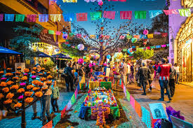
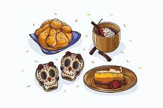
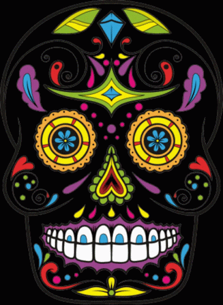

Menú del Día de Muertos
Ofrendas del Día de Muertos
- Fotografías de los difuntos
- Velas
- Flores de cempasúchil
- Comida favorita del difunto

Comida Típica del Día de Muertos
- Pan de muerto
- Calaveras de azúcar
- Atole
- Tamales

Actividades del Día de Muertos
- Visitar panteones
- Decoración de altares
- Hacer una procesión
